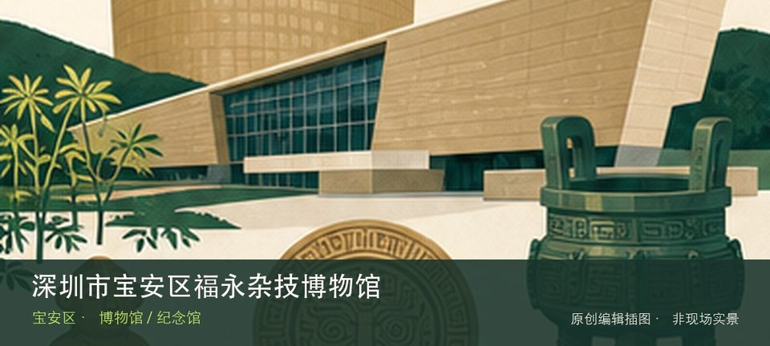

适合谁
适合对该专题有明确兴趣的人，也适合作为高温和雨天行程；开放不明时不宜临时前往。

SHENZHEN GUIDE · 153
福永 · 博物馆 / 纪念馆
深圳市宝安区福永杂技博物馆位于福永，杂技道具、训练方法和演出史将舞台上的技巧还原为长期身体训练与团体协作，专题辨识度很高。先辨认传统杂技道具，再观察训练与身体技巧，两者共同说明这里为何不能被同类地点的泛化标签替代。理解这处场馆，重点不是把所有展柜看完，而是沿着传统杂技道具和训练与身体技巧两条线索辨认其专题边界。常设展、开放楼层和时段可能调整，专程前往前仍应核对场馆当天公告。
WHY GO
适合对该专题有明确兴趣的人，也适合作为高温和雨天行程；开放不明时不宜临时前往。
先核对深圳市宝安区福永杂技博物馆当天开放与入口，从传统杂技道具开始；体力或时间不足时，在前往训练与身体技巧之前结束，不临时追加陌生支线。
公共交通先到福永片区，再以深圳市宝安区福永杂技博物馆公开参观入口为终点；校园、园区或预约型场馆须同时核对门禁与开放日。
自驾优先使用深圳市宝安区福永杂技博物馆所属建筑、园区或邻近正规公共停车场；预约时一并确认车牌登记、门岗和社会车辆准入规则。
全年可安排，尤其适合高温或降雨日；台风、极端天气及布展期仍可能临时调整开放。
NEARBY IDEAS
 编辑配图·非现场实景
编辑配图·非现场实景
深圳市十里红妆民俗博物馆位于福永，围绕传统婚俗、嫁妆家具和女性生活器物展开，红妆场景背后是宗族、家庭与手工艺关系，但当前闭馆改造。
 编辑配图·非现场实景
编辑配图·非现场实景
环立新湖绿道位于福州大道与政丰北路一带环立新湖，约8.8公里的环湖慢行线通常05:30—22:30开放，书吧、栈道与景观平台构成可分段游览的公园型绿道。
 授权实景图
授权实景图
立新湖公园位于福永，环湖绿道、亲水平台和社区休闲设施围绕水体展开，路线平缓但完整绕湖距离仍需按体力取舍。